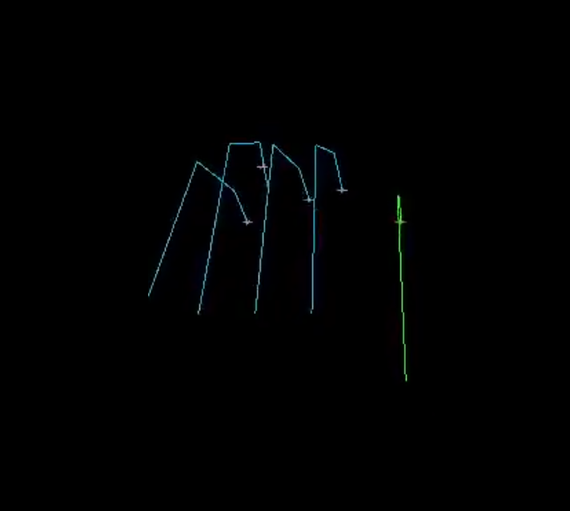
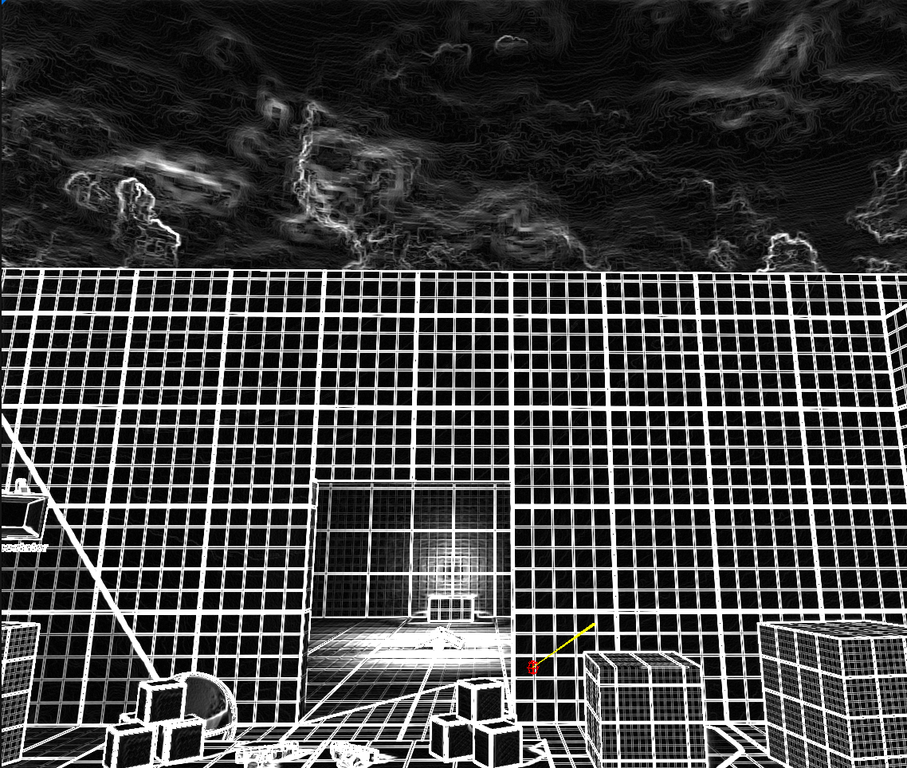
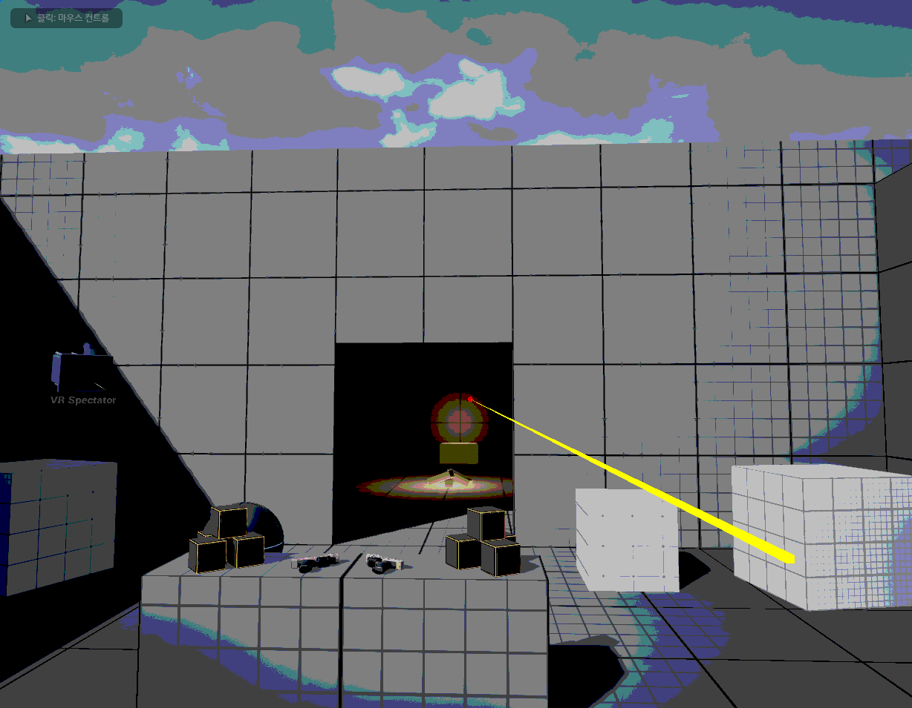

피아노 연주 시뮬레이션 및 고정밀 렌더링 시스템
졸업 프로젝트 중간 보고서
| 항목 | 내용 |
|---|---|
| 과목 | 졸업프로젝트 3201 |
| 팀 | 2팀 |
| 제출일 | 2026년 5월 12일 |
| 팀원 | 정근녕, 한승현, 이수민, 곽경민 |
목차
1. 프로젝트 개요
1.1 기획 배경
기존 게임 및 시뮬레이션 환경에서 손가락 움직임은 Linear Blend Skinning(LBS)에 의존하여, 피아노 연주와 같은 정교한 동작 시 관절 뭉개짐(Candy Wrapper Artifact), 주름 및 피하 조직의 비사실적 표현 문제가 발생합니다. 또한 MIDI 데이터만으로 실제 피아니스트 수준의 운지법을 자동 재현하고 영화적 품질의 렌더링을 생성하는 도구는 현재 존재하지 않습니다.
본 프로젝트는 이러한 기술적 공백을 해소하기 위해, MIDI 입력 → 최적 운지법 계산 → IK 기반 모션 생성 → 고품질 피부 렌더링 으로 이어지는 통합 파이프라인을 구축하는 것을 목표로 합니다.
1.2 프로젝트 목표
- MIDI-to-Motion: MIDI 파일을 파싱하여 해부학적으로 유효한 최적 운지법을 자동 계산하고 IK 애니메이션 데이터로 변환합니다.
- High-Fidelity Rendering: PBD(Position Based Dynamics) 기반 조직 변형 및 Tension Map 기반 동적 노멀 맵을 활용한 주름·핏줄 렌더링을 구현합니다.
1.3 팀 구성 및 역할 분담
| 팀원 | 담당 모듈 | 주요 역할 |
|---|---|---|
| 정근녕 | 01_Fingering | MIDI 파서 및 DP 기반 운지법 결정 알고리즘 |
| 한승현 | 02_IK | Jacobian 기반 역운동학(IK) 모션 생성 |
| 이수민 | 03_Skinning (셰이더) | UE5 커스텀 셰이더 파이프라인, Tension Map, 카메라/UI |
| 곽경민 | 03_Skinning (시뮬레이션) | Chaos Flesh PBD 피부 시뮬레이션, 핏줄·주름 Skinning |
1.4 기술 스택
| 분야 | 기술 |
|---|---|
| 운지법 알고리즘 | Python, Dynamic Programming, Polyphonic Voice Leading |
| IK 시스템 | C++, Jacobian IK (Damped Least Squares) |
| 렌더링 엔진 | Unreal Engine 5.5 |
| 피부 시뮬레이션 | Chaos Flesh (FEM/PBD), Physics Asset |
| 셰이더 | HLSL, Scene View Extension (SVE), RDG |
| 데이터 포맷 | Standard MIDI File (Format 0/1), JSON |
2. 전체 시스템 아키텍처
3. 진행 현황 요약
| 모듈 | 담당 | 주요 완료 항목 | 현재 상태 |
|---|---|---|---|
| MIDI 파서 | 정근녕 | Format 0/1 파싱, 화음 그룹화, 양손 분리 | 완료 |
| 운지법 엔진 V5 | 정근녕 | Polyphonic Voice Leading, 왼손 역전 버그 수정, 실시간 시뮬레이터 | 완료 |
| Jacobian IK | 한승현 | DLS IK 구현, ROM 제약, 베지어 손목 궤적, C/F코드 전환 검증 | 알고리즘 검증 완료 |
| UE5 IK 파이프라인 연동 | 한승현 | UE5 Animation 시스템 데이터 전달 | 진행 중 |
| 커스텀 셰이더 파이프라인 | 이수민 | SVE 삽입, RDG 자원 관리, HLSL 분기, 게임-렌더 동기화 검증 | 사전 검증 완료 |
| 물리 기반 Skinning 셰이더 | 이수민 | LBS→컴퓨트 셰이더 전환, 본 매트릭스 SBO 연동 | 진행 중 |
| Chaos Flesh 에셋 구성 | 곽경민 | Dataflow 그래프, Capsule 콜리전 17개, 사면체 볼륨 생성 확인 | 에셋 구성 완료 |
| Chaos Flesh 블루프린트 연동 | 곽경민 | 캐릭터 블루프린트 Flesh 컴포넌트 연동 | UE 버전 이슈로 중단 |
4. 모듈별 상세 구현 현황
4.1 운지법 결정 엔진 — 정근녕
4.1.1 MIDI 파서
운지법 엔진의 입력 단계로, Standard MIDI File Format 0 및 Format 1을 모두 지원하는 파서를 구현하였습니다.
파싱 항목:
- 음표 이벤트: Note On / Note Off, 음높이(pitch, 0~127), 벨로시티(velocity, 0~127)
- 타이밍: Tick 단위 타임스탬프를 템포 이벤트(BPM)를 참조하여 절대 시간(ms)으로 변환
- 박자 정보: Time Signature 메타 이벤트 파싱
멀티트랙 MIDI(Format 1)의 경우 피아노 트랙을 다음 우선순위로 자동 선별합니다.
| 우선순위 | 선별 기준 |
|---|---|
| 1순위 | GM 프로그램 번호 0~7 (Piano 계열 악기) |
| 2순위 | 음역대가 A0(MIDI 21) ~ C8(MIDI 108) 범위에 집중된 트랙 |
| 3순위 | 노트 이벤트 수가 가장 많은 트랙 |
파싱 결과는 다음 NoteEvent 자료구조로 메모리에 적재됩니다.
NoteEvent {
time_ms // 절대 시간 (밀리초)
pitch // MIDI 음높이 (0~127)
velocity // 벨로시티 (0~127)
duration_ms // 음표 지속 시간 (밀리초)
hand // 왼손: 0, 오른손: 1
finger // 운지법 알고리즘이 배정한 손가락 번호 (1~5)
}
4.1.2 양손 분리 (Hand Splitter)
파싱된 NoteEvent 시퀀스를 왼손/오른손으로 분리합니다. 기본적으로 피치 기준점(미들 C, MIDI 60) 상하를 기준으로 분리하되, 동시 화음 내 피치 분포와 직전 프레임 손 위치를 함께 고려하여 경계 부근의 음표에 대한 귀속을 결정합니다. 이를 통해 양손이 교차하는 구간에서도 논리적으로 일관된 분리 결과를 얻을 수 있습니다.
4.1.3 알고리즘 진화 과정
본 엔진은 세 단계의 반복적 개선을 거쳐 현재 V5에 도달하였습니다.
| 버전 | 핵심 도입 개념 | 한계 |
|---|---|---|
| V1/V2 | 개별 음표 단위 DP, 기초 비용 함수, Wrist Hint 생성 | 화음(Chord) 처리 미흡, 동시 타건 시 손가락 꼬임 발생 |
| V4 | 화음 그룹 단위 DP, 해부학적 ROM 적용, MAX_SPAN 페널티, 손목 각도 산출 |
단일 선율(Monophonic) 가정, 음악적 맥락 미반영 |
| V5 | Polyphonic Voice Leading, 성부 분리, 왼손 역전 수정, 실시간 시뮬레이터 | — (현재 버전) |
4.1.4 Chord-based DP 구조
운지법 결정의 핵심은 화음 그룹을 하나의 DP 상태(State)로 처리하는 것입니다. 30ms 이내에 시작되는 음표들을 하나의 화음 그룹으로 묶어 처리함으로써 동시 타건 시 손가락 배정의 논리적 일관성을 확보하고 연산 복잡도를 낮춥니다.
상태 정의 및 전이:
- 상태(State): 현재 화음 그룹에 배정된 손가락 조합 (예:
(1, 3, 5)) - Monotonicity 제약: 화음 내에서 피치 오름차순과 손가락 번호 오름차순이 반드시 일치하도록 강제하여 손가락 꼬임을 원천 차단합니다.
- 전이(Transition): 이전 화음의 최적 상태에서 현재 화음의 각 후보 상태로 전이할 때의 비용을 계산하여 최소 누적 비용 경로를 탐색합니다.
해부학적 스팬 제약 (MAX_SPAN):
각 손가락 쌍(Pair)별로 물리적으로 도달 가능한 최대 건반 간격(반음 수)을 상수로 정의하여, 이를 초과하는 운지 조합에 막대한 페널티를 부여합니다. 이를 통해 인체 가동 범위를 벗어나는 배정을 사전에 차단합니다.
4.1.5 V5 핵심 기술: Polyphonic Voice Leading
V5 엔진은 한 손 내에서도 멜로디, 베이스, 내성(Inner)을 자동으로 구분하여 음악적 맥락을 반영한 운지법을 산출합니다.
성부별 손가락 배정 전략:
| 성부 | 색상 | 우선 손가락 | 이유 |
|---|---|---|---|
| MELODY | 빨강 | 4번, 5번 | 선율의 수평적 연결성(Legato) 확보, 1번(엄지) 기피 |
| BASS | 파랑 | 5번, 1번 | 저음역 안정적 지지 |
| INNER | 회색 | 2번, 3번, 4번 | 화음 충전 역할, 효율적 배치 |
비용 함수 구성:
- : 이전 포지션에서 현재 포지션까지의 손목 이동 거리
- : 4·5번 손가락의 태생적 약함을 반영한 기본 비용
- : 흑건 엄지 사용, MAX_SPAN 초과 스팬, 비정상 손가락 교차에 대한 페널티
- : 성부 역할에 따른 손가락 선호도 가중치 (멜로디 라인의 레가토 연결성 포함)
4.1.6 손목 물리 모델링
운지법 결정 결과를 바탕으로 IK 시스템에서 활용할 손목 회전 각도를 추정합니다.
- Wrist Yaw: 손가락들이 누르는 건반의 평균 위치와 손목 중심축 사이의 오프셋을 계산하여
-35.0° ~ +35.0°범위 내의 각도를 산출합니다. - Wrist Roll: 엄지가 흑건을 누르거나 새끼손가락이 흑건을 누를 때 발생하는 손목의 기울어짐을 모사합니다 (
±20.0°).
두 값 모두 인간의 생리적 가동 범위를 하드 클램핑하여 비현실적인 각도가 출력되지 않도록 처리하였습니다.
4.1.7 실시간 시뮬레이터
운지법 데이터를 검증하기 위해 Python/Pygame 기반 실시간 시뮬레이션 툴을 함께 개발하였습니다.
주요 기능:
- 이벤트 기반 MIDI 재생:
pygame.midi를 통해 FPS(30) 단위로 타임라인을 분할하고, 해당 프레임에 진입하는 모든 Note On 이벤트를 시스템 MIDI 장치로 즉시 전송하여 시각-청각 동기화를 구현하였습니다. - 타임라인 탐색(Seek): 슬라이더 및 키보드(화살표 키)로 재생 위치를 즉시 이동할 수 있으며, 탐색 시
panic()명령으로 모든 소리를 끊고 새 위치의 이벤트를 즉시 재생합니다. - 이중 마디 시각화: 손가락 마디별로 성부 역할(안쪽 마디)과 손가락 번호(끝 마디)를 서로 다른 색상으로 채색하여 데이터 가독성을 높였습니다.
| [그림 1] 화음 타건 — 왼손·오른손 골격 시각화 | [그림 2] 다중 손가락 동시 타건 및 타임라인 슬라이더 |
|---|---|
.png) |
.png) |
| 왼손(파랑)과 오른손(노랑·빨강) 손가락 골격이 해당 건반으로 향하는 모습 | 왼손(파랑·노랑)·오른손(빨강·초록) 동시 타건과 하단 재생 슬라이더 |
4.1.8 출력 데이터 사양
운지법 엔진은 UE5 IK 시스템 구동에 필요한 다음 JSON 데이터를 출력합니다.
{
"pitch": 76,
"start_ms": 1234.5,
"duration_ms": 250.0,
"hand": "right",
"finger": 3,
"role": "MELODY",
"wrist_yaw_deg": -12.4,
"wrist_roll_deg": 3.1,
"pressure": 0.72,
"key_depth": 0.68
}
4.2 IK 기반 모션 생성 — 한승현
4.2.1 설계 방향
본 모듈의 IK 계산은 실시간이 아닌 오프라인 사전 계산 단계에서 수행됩니다. 따라서 수렴 속도보다 정확도와 제약 처리 유연성을 우선하여 DLS(Damped Least Squares) 방식의 Jacobian 기반 IK를 채택하였습니다.
4.2.2 손 모델 계층 구조 및 ROM 설정 (initHand)
관절 계층: Wrist → Metacarpal → MCP → PIP → DIP → Fingertip
| 관절 | 굴곡 범위 | 신전 범위 | 내외전 |
|---|---|---|---|
| MCP | 0° ~ 90° | 0° ~ 20° | ±20° |
| PIP | 0° ~ 100° | 0° ~ 10° | — |
| DIP | 0° ~ 80° | 0° ~ 5° | — |
| 엄지 CMC | 0° ~ 50° | 0° ~ 50° | ±40° (축회전 0°~15°) |
| 엄지 MCP | 0° ~ 60° | 0° | — |
| 엄지 IP | 0° ~ 80° | 0° ~ 5° | — |
모든 관절 각도는 std::clamp를 통해 상기 ROM 범위 내로 강제 제한하여 생리적으로 불가능한 동작을 원천 차단하였습니다.
4.2.3 DLS IK 연산 (updateJacobianKinematics)
- 타겟 건반 좌표와 현재 End-effector(손가락 끝) 사이의 오차 벡터 산출
- Forward Kinematics(
computeFK)로 관절 글로벌 변환 갱신 - 회전 축과 End-effector 거리 벡터의 외적으로 Jacobian 행렬 생성
- 형태의 DLS 역행렬 계산으로 특이점 근방 발산 방지 ()
- 허용 오차(
tolerance) 미만 수렴 시 반복 종료
4.2.4 베지어 곡선 기반 손목 궤적
단순 선형 이동이 아닌 2차 베지어 곡선을 사용하여 코드 전환 시 손목이 자연스럽게 들렸다가 내려오는 궤적을 구현하였습니다. C코드↔F코드 전환 시나리오에서 알고리즘 검증을 완료하였습니다.
[그림 3] Jacobian IK 시각화 — 손가락 골격 렌더링
C++ 레벨에서 구현된 DLS Jacobian IK의 계산 결과. 각 손가락이 목표 건반 좌표를 향해 수렴하는 것을 확인하였습니다.

[영상] IK 테스트 결과:
IK TEST.mp4
4.2.5 향후 연동 계획
현재 C++ 레벨에서의 알고리즘 검증이 완료된 상태이며, 다음 단계로 오프라인 계산 결과를 UE5 Animation 시스템으로 전달하는 데이터 파이프라인 구축 및 다중 손가락 충돌 방지 로직 결합 테스트를 진행할 예정입니다.
4.3 커스텀 셰이더 파이프라인 — 이수민
4.3.1 개요 및 목적
본 모듈의 최종 목표는 UE5 렌더링 파이프라인 내에 물리 기반 GPU Skinning 셰이더를 삽입하는 것입니다. 이를 위해 중간 단계로 동일한 6요소 부트스트랩 구조를 공유하는 단계형 시각 처리(Staged Rendering) 파이프라인을 테스트베드로 구축하여 핵심 기술 요소 4가지를 사전 검증하였습니다.
사전 검증이 필요한 4가지 핵심 기술:
- 엔진 렌더링 파이프라인 사이에 커스텀 패스를 안전하게 삽입하는 메커니즘
- 글로벌 셰이더(Global Shader)와 HLSL 결합
- RDG(Render Dependency Graph) 기반 GPU 자원 관리
- 게임 스레드-렌더 스레드 간 데이터 동기화
4.3.2 검증 항목별 구현 내용
① Scene View Extension(SVE) 기반 커스텀 패스 삽입
FCoreDelegates::OnPostEngineInit 콜백을 활용하여 엔진 초기화 직후 SVE를 생성하는 지연 초기화 패턴을 적용하였습니다. SubscribeToPostProcessingPass를 오버라이드하여 톤매핑(Tonemap) 단계에 커스텀 패스를 후크하였으며, 모듈 종속성으로 RenderCore, RHI, Renderer, Projects 4개를 추가하였습니다.
② 글로벌 셰이더 결합 및 RDG 디스패치
FStagedRenderPS 클래스는 FGlobalShader를 상속하며, SHADER_USE_PARAMETER_STRUCT 매크로로 SceneColor SRV, 샘플러, uniform 상수, RT 슬롯을 바인딩합니다. FPixelShaderUtils::AddFullscreenPass로 PSO 생성과 뷰포트 설정을 자동화하였으며, RDG가 트랜션트 자원 회수 및 배리어 삽입을 자동 관리합니다.
③ HLSL 단일 셰이더 다중 모드 분기 (StagedRender.usf)
CVar(stage.Mode) 값에 따라 4가지 처리 경로를 분기합니다.
| Mode | 처리 내용 |
|---|---|
| 0 | 고정 검정 출력 (비활성 확인) |
| 1 | Sobel luma 에지 검출 |
| 2 | 50% 탈색 + 4단 포스터라이즈 |
| 3 | 패스스루 (원본 출력) |
④ 게임-렌더 스레드 동기화
IConsoleManager::Get().FindConsoleVariable()->Set(...) 한 줄로 게임↔렌더 스레드 CVar 동기화가 구현되었음을 확인하였습니다. 1 키 입력 시 4단계 순환 전환이 즉각 셰이더에 반영됩니다.
4.3.3 검증 결과
stage.Mode 값을 순환 전환하며 세 가지 셰이더 분기가 모두 정상 동작함을 확인하였습니다.
| [그림 3] Stage 1 — Sobel 에지 검출 | [그림 4] Stage 2 — 탈색 + 포스터라이즈 | [그림 5] Stage 3 — 패스스루 |
|---|---|---|
 |
 |
 |
| 톤매핑 이후 LDR 씬에 커스텀 Sobel 셰이더가 정상 삽입됨 | 동일 씬에 탈색 + 4단 포스터라이즈 분기 처리 출력 확인 | stage.Mode 3 설정 시 원본 렌더링이 정상 복원됨 |
4.3.4 향후 확장 계획
현재 검증된 파이프라인 골격을 기반으로 다음 단계를 진행할 예정입니다.
- PP 단계 후크 → 정점 처리 단계 후크로 전환하여
USkeletalMeshComponent정점 스트림에 직접 접근 FStagedRenderPS를 본 매트릭스 SBO와 가중치 버퍼를 입력으로 받는 컴퓨트 셰이더로 교체- CVar 브릿지를 Structured Buffer 업로드 경로로 확장하여 매 프레임 다량의 본 변환을 안전하게 전달
4.4 Chaos Flesh PBD Skinning — 곽경민
4.4.1 개요
LBS 단독 사용 시 관절 굴곡부에서 발생하는 Candy Wrapper Artifact를 해소하기 위해, UE5의 FEM 기반 소프트바디 시뮬레이션 시스템인 Chaos Flesh를 적용하였습니다. 사면체(Tetrahedral) 메시를 내부 볼륨으로 생성하여 뼈 움직임에 따라 피부가 자연스럽게 밀리고 변형되는 효과를 구현하며, 향후 Tension Map 및 노멀 맵과 연동하여 손등의 핏줄·주름 표현까지 확장하는 것을 최종 목표로 합니다.
4.4.2 손가락 콜리전 설계
Chaos Flesh 시뮬레이션에서 피부 관통 방지를 위해서는 Physics Asset에 손가락 마디별 콜리전 바디가 필수적입니다. 기존 단일 손바닥 바디에서 손가락 첫째~셋째 마디 총 17개 관절 본에 Capsule 콜리전 바디를 추가하였습니다. Capsule을 선택한 이유는 손가락의 원통형 형태와 근사하며 구(Sphere) 대비 관절 방향에 따른 충돌 정확도가 높기 때문입니다.
[그림 6] Physics Asset — Capsule 콜리전 배치
각 손가락 마디별 독립적인 Capsule 콜리전 바디를 확인하였습니다.
.png)
4.4.3 Flesh Asset Dataflow 그래프 구성
[그림 7] Flesh Asset Dataflow 그래프 및 사면체 볼륨 생성 결과
(좌) Dataflow 노드 구성: SkeletalMeshToCollection → CreateTetrahedron → FleshAssetTerminal
(우) 파란색 사면체 볼륨이 캐릭터 손·팔 영역에 정상 생성됨을 확인하였습니다.
.png)
주요 설계 결정 사항은 다음과 같습니다.
| 설계 결정 | 이유 |
|---|---|
| 렌더링 메시와 사면체 소스 메시를 동일 메시로 사용 | 별도 로우폴리 메시 미제작 (향후 교체 예정) |
| Geometry Collection 변환 시 지오메트리 데이터 명시 포함 | 미포함 시 사면체 생성 소스 볼륨이 미정의되어 사면체 생성 불가 |
| 사면체 생성 범위를 손·팔로 한정 | 전신 적용 시 연산 비용 수십 배 증가; PBD 연산량은 사면체 수에 비례 |
| 표면 메시 스킨 웨이트를 사면체 버텍스에 전달 | 미전달 시 시뮬레이션 볼륨이 뼈 움직임을 추적하지 못해 Flesh가 분리됨 |
4.4.4 Flesh 시뮬레이션 결과 (에디터 프리뷰)
[그림 8] 손 에셋 — T-포즈 기본 상태
.png)
[그림 9] 손가락 굴곡 — Flesh 변형 전 (LBS 단독)
굴곡 시 관절 부위에서 LBS 아티팩트(뭉개짐)가 관찰됩니다.
.png)
[그림 10] 손가락 굴곡 — Flesh 변형 적용 후
Chaos Flesh 적용 시 피부 볼륨이 보존되며 보다 자연스러운 변형이 관찰됩니다.
.png)
[영상] 메시-스켈레톤 바인딩 테스트:
Mesh_Skeleton_Binding_Test(7주차).mp4
4.4.5 현재 진행 상태 및 이슈
진행 완료:
- Flesh Asset 생성 및 Dataflow 그래프 구성을 완료하였습니다.
- 에디터 프리뷰에서 사면체 시뮬레이션 볼륨 정상 생성을 확인하였습니다.
현재 이슈 — UE 버전 호환성:
작업 환경(UE 5.6)과 참조 예제(UE 5.5) 간의 Flesh 전용 컴포넌트 API 변경으로 인해 캐릭터 블루프린트 연동 단계에서 진행이 중단된 상태입니다. UE 5.5로 다운그레이드 후 재시도를 검토 중입니다.
5. 주요 기술적 도전 및 해결
5.1 왼손 운지법 역전 문제 (01_Fingering)
현상: 시각화 결과, 왼손의 엄지(1번)가 가장 낮은 피치를, 새끼(5번)가 가장 높은 피치를 누르는 X자 꼬임 현상이 발생하였습니다.
원인: 엔진이 "낮은 피치 = 낮은 번호 손가락"이라는 오른손 중심 논리를 양손에 동일하게 적용하였습니다. 인체 구조상 왼손은 오른손의 거울상(Mirror)이므로 매핑 로직이 반전되어야 합니다.
해결:
- 왼손 연산 시 손가락 번호 조합을 역순으로 배정하였습니다. (예:
(1,2,3)→(5,4,3)) - 교차 판정 로직을 각 손의 방향성에 맞게 재구축하였습니다. (오른손: 상행 시 엄지 밑으로; 왼손: 하행 시 엄지 밑으로)
결과: 수정 후 왼손 운지가 X자 꼬임 없이 평행하고 자연스러운 동작을 유지함을 확인하였습니다.
5.2 Jacobian IK 특이점 문제 (02_IK)
현상: 손가락이 특정 자세에서 IK 계산 값이 발산하여 불안정한 모션이 생성되었습니다.
원인: 표준 Jacobian 역행렬 계산 시 특이점(Singularity) 근방에서 역행렬이 수치적으로 불안정합니다.
해결: 형태의 Damped Least Squares(DLS) 역행렬을 적용하였습니다 (). 또한 각도 변화량(dTheta)에 최대 스텝 제한을 두어 과도한 수렴 발산을 방지하였습니다.
5.3 SVE 초기화 타이밍 문제 (03_Skinning)
현상: StartupModule 단계에서 FSceneViewExtensions::NewExtension 호출 시 크래시가 발생하였습니다.
원인: GEngine == nullptr 상태에서 SVE 생성을 시도하였습니다.
해결: FCoreDelegates::OnPostEngineInit 콜백에 SVE 생성을 지연하여 엔진 초기화 직후 안전하게 생성하도록 처리하였습니다.
5.4 Chaos Flesh 버전 호환성 이슈 (03_Skinning)
현상: UE 5.6 환경에서 Flesh 전용 컴포넌트 명칭 및 파라미터 구성이 참조 예제(5.5)와 불일치하여 블루프린트 연동이 중단되었습니다.
대응: UE 5.5 다운그레이드를 검토 중입니다. 현재 에디터 프리뷰 수준의 시뮬레이션 볼륨 생성은 정상 확인된 상태입니다.
6. 향후 계획
6.1 모듈별 다음 목표
| 모듈 | 다음 목표 |
|---|---|
| 01_Fingering | 복잡한 대위법 및 현대 곡 대응력 향상; UE5 JSON 데이터 테이블 임포터 개발 |
| 02_IK | UE5 MetaHuman 손 모델 IK 파이프라인 연동; 다중 손가락 충돌 방지 로직 |
| 03_Skinning (셰이더) | PP 후크 → 정점 처리 단계 전환; LBS/DQS 통합 컴퓨트 셰이더 구현 |
| 03_Skinning (Flesh) | UE 5.5 전환; Flesh 블루프린트 연동; Tension Map 핏줄·주름 표현 |
7. 결론
본 중간 보고서에서는 피아노 연주 시뮬레이션 시스템의 4개 모듈에 대한 현재까지의 구현 현황을 정리하였습니다.
01_Fingering 모듈은 MIDI 파서부터 V5 Polyphonic Voice Leading 엔진까지 완성하여, 멜로디·베이스·내성 3성부 자동 분리 및 해부학적 ROM 기반의 최적 운지법 데이터를 JSON 형태로 안정적으로 출력할 수 있는 상태입니다.
02_IK 모듈은 C++ 레벨에서 DLS Jacobian IK 알고리즘의 검증을 완료하였으며, 베지어 곡선 기반 자연스러운 손목 궤적 생성까지 구현하였습니다. 현재 UE5 연동 파이프라인 구축이 진행 중입니다.
03_Skinning (셰이더) 모듈은 SVE·RDG·HLSL·스레드 동기화 등 커스텀 셰이더 파이프라인의 4개 핵심 기술 사전 검증을 완료하여, 물리 기반 Skinning 셰이더로의 확장을 위한 안정적인 토대를 마련하였습니다.
03_Skinning (Flesh) 모듈은 Chaos Flesh Dataflow 그래프 구성 및 에디터 수준의 사면체 시뮬레이션 볼륨 생성을 확인하였으나, UE 버전 호환성 이슈로 블루프린트 연동이 중단된 상태로 엔진 다운그레이드 후 재시도할 예정입니다.
1학기 최종 발표까지 각 모듈의 UE5 통합 및 전체 파이프라인 데모 시연을 목표로 개발을 지속하겠습니다.
본 보고서는 2026년 5월 12일 기준으로 작성되었습니다.